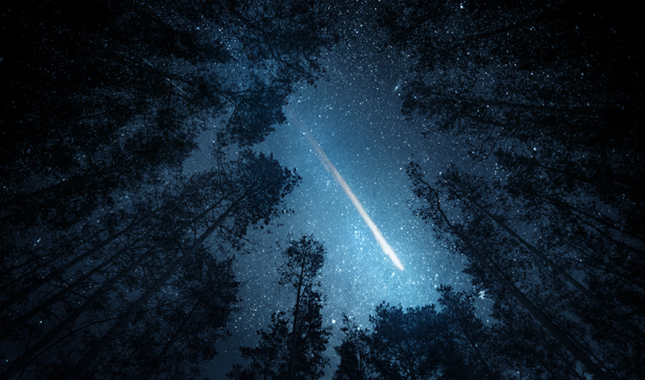

Lluvia de estrellas Cuadrántidas (3 y 4 de enero)

La primera gran lluvia de estrellas del año alcanzará su punto máximo
de actividad la madrugada del 3 y el 4 de enero, cuando será posible observar hasta 100 meteoros
por hora en condiciones ideales desde el hemisferio norte.
Las Cuadrántidas producen meteoros muy brillantes que recorren el cielo nocturno en cuestión de
segundos y este año, su pico coincide con una Luna creciente iluminada menos del 4 %, una
oportunidad ideal para encontrar un sitio cómodo y libre de contaminación lumínica para
disfrutar de uno de los fenómenos astronómicos más relevantes de 2022.
Eclipse total de Luna (15 de mayo)

El primer eclipse lunar total de 2022 llegará la noche del 15 de mayo
y será visible en toda América, el oeste de Europa y África.
El eclipse comenzará a las 19:32 (UTC -6) cuando la Luna entre a la penumbra (la sombra parcial
de la Tierra) y alcanzará su máximo a las 22:11 (UTC -6), cuando el 100 % de la Luna quede
eclipsada por el cono de la sombra terrestre, proyectando un color anaranjado sobre la
superficie de nuestro satélite natural.
Lluvia de estrellas Perseidas (12 y 13 de agosto)

Las Perseidas son uno de los fenómenos astronómicos más populares
debido a su intensidad (hasta 118 meteoros por hora en condiciones ideales en su punto de
actividad máxima). En 2022, esta lluvia de estrellas de meteoros azul encendido alcanzará su
clímax las noches del 12 y 13 de agosto.
Aunque la Luna llena acompañará la mayor parte de la noche, encontrar un sitio cómodo y libre de
contaminación lumínica será suficiente para observar los meteoros, que si bien tienen como
radiante la constelación de Perseo en el noreste, pueden aparecer en cualquier punto de la
bóveda celeste.